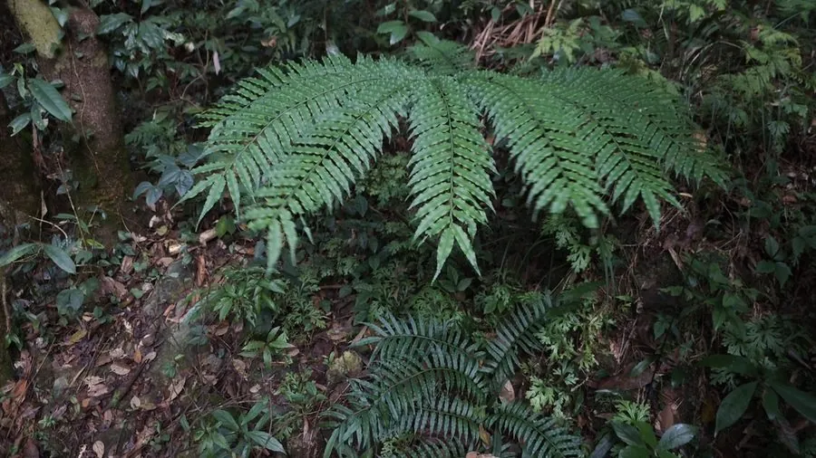

蕨类与裸子植物 · 植物界
福建观音座莲 Angiopteris fokiensis

合囊蕨科观音座莲属大型陆生蕨类，根状茎肥大如莲座，二回羽状大叶长达两米，是蕨类中体型最大的种类之一。
- 分类
- 门蕨类植物门纲合囊蕨纲目合囊蕨目科合囊蕨科属观音座莲属
- 栖息环境
- 海拔 800 米以下的溪边、沟谷与常绿阔叶林下，喜温暖湿润半阴
- 地理分布
- 中国福建、广东、广西、江西、湖南、贵州、云南、浙江等地
- 保护级别
- 国家二级重点保护野生植物；IUCN 暂无评估
物种志
福建观音座莲为合囊蕨科观音座莲属大型陆生蕨类，植株高可达一点五至两米。根状茎肥大、直立，形似莲座，密被褐色鳞片。叶片二回羽状，大型，长可达两米，羽片披针形，革质，表面深绿，叶柄粗壮、基部膨大。孢子囊群长圆形，沿羽片边缘排列，孢子期夏秋季。
福建观音座莲分布于中国福建、广东、广西、江西、湖南、贵州、云南、浙江等地，多生于海拔八百米以下的溪边、沟谷和常绿阔叶林下。它喜温暖湿润和半阴环境，适宜疏松肥沃、排水良好的酸性土壤，不耐寒。植株高大、叶姿优美，是南方园林和温室中的大型观叶植物；根状茎富含淀粉，可提取淀粉，也可入药。由于野生资源因采挖和生境破坏而减少，被列为国家二级重点保护野生植物。
形态与习性
- 株高1.5–2 m，根茎肥大如莲座
- 叶形二回羽状，长可达 2 m
- 孢子期夏秋季，囊群长圆形
- 光照喜半阴，忌强光
- 水分喜湿润，常生于溪边
- 土壤疏松肥沃的酸性土
- 主要用途大型观叶植物，根茎提取淀粉
趣味知识
- 福建观音座莲的根状茎肥大、形似观音的莲座，因此得名。
- 它的二回羽状叶可长达两米，是蕨类植物中叶片最大的种类之一。
- 观音座莲属是现存最古老的蕨类类群之一，化石记录可追溯到石炭纪。